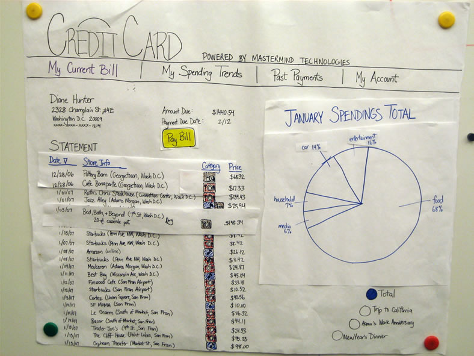
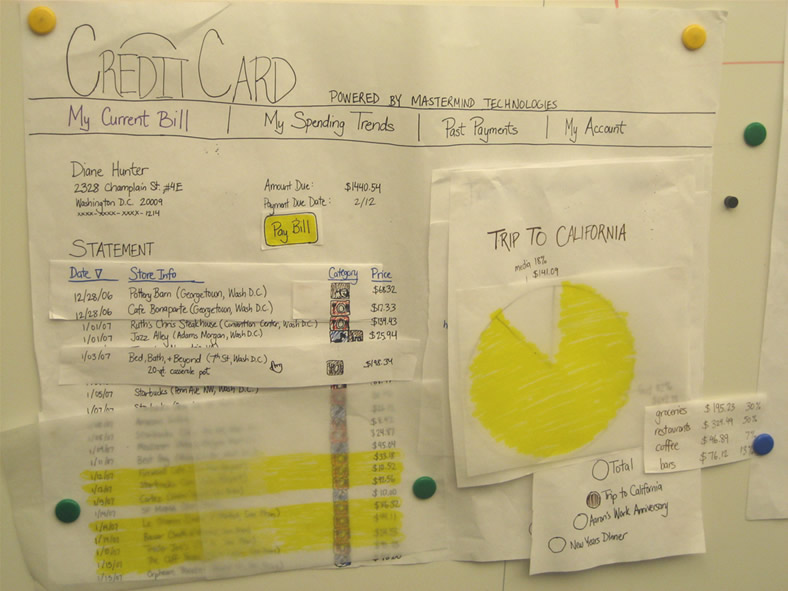
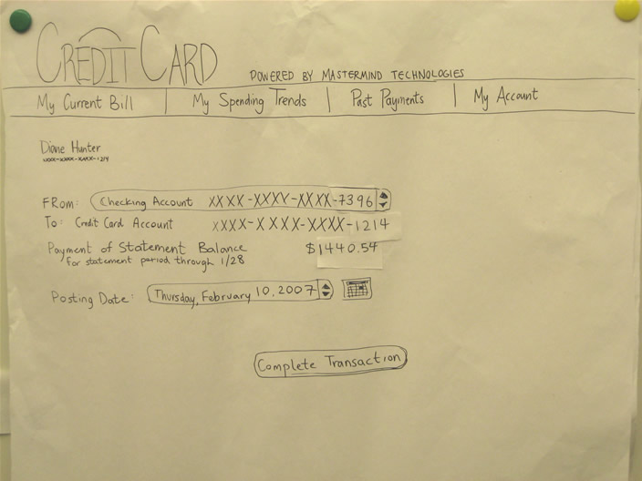
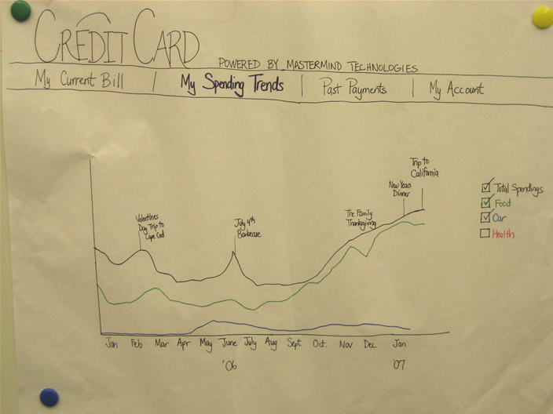

Summary
Summary| Research |
Synthesis |
Design |
Solution |
|
Sketches 01
|
|
Wireframes 02
|
Design |
02 Wireframes |
We created wireframes to get a sense of the layout of our final site.
Website Structure
There is a navigation bar running across the top that allows the user
to navigate to the other parts of the site. The choices are, my current
bill (the screen that is currently displayed), my spending trends, past
payments and my accounts.
________________________________________________________________________________
Statement View
Indicates the user is signed in by displaying her name, address and
account number.
To the right, the amount due and due date are listed along with a
prominent pay bill button.
Below is the statement. The icons next to each row, symbolize what type
of merchandise that purchase contained. Items can be resorted by date,
purchase name, category or amount.
To the right of the statement is a pie chart with the total spending
for that month.

________________________________________________________________________________
Event Details
Clicking one of the circles below the pie chart will show the users her
purchases from a given event. Since our credit card site is linked to
her calendar, it is able to give her a breakdown of the purchases from
her trip to California. It also highlights said purchases. The popup on
the right gives a more detailed breakdown. (ie. It will break up food
into groceries, restaurants, coffee etc.)

________________________________________________________________________________
Payment Screen
Based on past transactions it is
able to predict when you are likely to pay for a given bill and it
autofills those details. For example: If Diane always pays her bill two
days before it is due from Account A then the system will
automatically suggest those details so she doesn't have to fill them in
herself.

________________________________________________________________________________
My Spending Trends
This page shows your trends from the last year so
that you how your spending compares to the past. Since this is also
linked to your calendar events, if there is a big spike in spending for
one month it will link it to events that occured then and you will
easily be able to tell what caused the spike. The graph can be filtered
so that you can see total spending or just how much you spent on food,
car, health etc.
